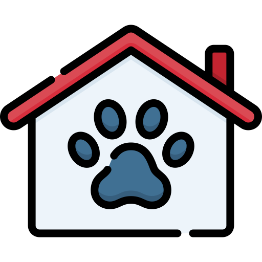

Rescatando Huellas
Rescatando Huellas se trata de una organización enfocada en la protección y bienestar de animales que hayan sido abandonados o maltratados.
Puede ayudar a la organización de las siguientes maneras:
Adopción: Para todas aquellas personas que desean darle un hogar y cuidado a un animal.
Apadrinando: Es una opción para aquellas personas que si bien no tienen las posibilidades de adoptar un animal, igual pueden cuidar de el desde las instalaciones.
Donaciones: Ayudar directamente a la organización con donaciones monetarias o materiales como artículos de limpieza o cuidado y mantenimiento de animales.
Voluntariado: Rescatando Huellas brinda Voluntariado dependiendo del tiempo de la persona, donde se puede interactuar con los animales o realizar labores de limmpieza o mantenimiento de las instalaciones.
rescatando Huellas
Río escalante Chachocente
Se encuentra en la región del Pacífico Sur entre los departamentos de Carazo y Rivas. Tiene una superficie de 29,604 hectáreas distribuyéndose de la siguiente manera: un 90% en el municipio de Santa Teresa, un 6% en el municipio de Jinotepe y 4% en el municipio de Tola. El área protegida fue declarada a través del Decreto presidencial 12-94, publicado en el diario oficial La Gaceta el 17 de agosto de 1983.
Playa Chacocente es una de las más importantes del mundo que sirve para la anidación de las tortugas marinas, así como la protección del bosque tropical seco del Pacífico que tiene importancia socioeconómica, ecológica y científica para el país.
Las especies de fauna más emblemáticas del área protegida son las tortugas marinas, las cuales anidan en las costas en diferentes momentos del año. Se reporta la anidación de cuatro especies: tortuga tora, tortuga torita, tortuga carey y tortuga paslama; todas ellas en peligro de extinción. También puedes encontrar variedad de aves, mamíferos y reptiles, entre ellos: pelicano café, chocoyo, urraca, cierto guis, guadabaranco, mono congo, ardilla, conejo, garrobo, boa constrictor, venado, etc.

Casa Hogar Lucito
Son un conjunto de jóvenes dedicados a la protección y promoción de los derechos de los animales, además de la preservación de la flora y fauna de Nicaragua. La organización con la ayuda de su personal y de personas externas, organizan recaudaciones de fondos, eventos de desarrollo comunitario y actividades las cuales benefician a los animales y al medio ambiente.
La casa hogar para animales, comenzo cuando Ilse Díaz rescato a un cachorro de un basurero de las calles de Masaya, a dicho cachorro se le llamo Lucito y fue la inspiración de Ilse para fundar la primera casa hogar para animales de Masaya dandole el nombre de "Casa Hogar Lucito".
Casa Hogar Lucito
UCA
Organización de la universidad centroamericana UCA la cual se enfoca en el cuido de los gatitos que se encuentran dentro de la institución. A los gatos se les da alimento y cambio de agua, al mismo tiempo por medio en caso que un gato lo necesite se le puede realizar una operación.
La organización acepta donativos como dinero o alimento. Las donaciones monetarias además de poder comprar productos para los gatos, también pueden servir para las operaciones hacia los gatos que se mencionaron antes.
UNAN
Tiene el objetivo de proteger y conservar la especie de iguana verde. El zoocriadero se fundo con el objetivo de investigación a comunidades rurales, al mismo tiempo con el objetivo de la educación ambiental de jovenes en el cuido de iguanas verdes.
El cuidado de la iguanas se basa en la alimentación producida en la universidad, al mismo tiempo que los jovenes que son parte de esta actividad traen frutas. Las actividades con otras instituciones educativas permiten recaudar fondos para poder seguir con el cuido de todas las iguanas, junto con el fondo que proporciona la misma universidad.
Zoocriadero UNAN-ManaguaTicuantepe
El Zoológico nacional es el más grande de Nicaragua, exhibe más de seiscientas especies de la fauna nacional, la mayoriía silvestres y algunas domésticas, adempas de varios ejemplares exóticos oriundos de sitios lejanos como África y Asia. Algunos animales que se pueden observar se encuentran en peligro de extinción.
En 1998 el Zoológico Nacional se convirtió en el centro oficial de recepción de animales maltratados, decomisados a cmerciantes y traficantes por el ministerio del Ambiente y los Recures Naturales de Nicaragua. Los animales reciben atención médica, rehabilitación y posteriormente reinserción en zonas de hábitad compatibles.
Estoy Aquí
Se trata de un proyecto que tiene el objetivo de hacer que los animales callejeros sean notados en el país, al mismo tiempo fomentar a la responsabilidad de lo que significa tener una mascota.
La fundación nació en el 2014, ideados por estudiantes de Medicina Veterinaria. Se visualiza la creación de un Centrp de Rehabilitación, donde se internan y trata a los animales con padecimientos urgentes, que no puedan ser antendidos en otros lugares por ser animales sin hogar. Cabe recalcar que la fundación no es un refugio de animales, simplemente pretende ayudar a todo animal sin dueño que lo requiera, para que luego sea ingresado en un programa de adopción.
Estoy Aquí Nicaragua